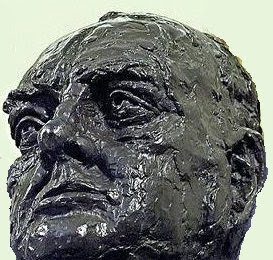

Taksim'de Soros büstü
Taksim'de disko, Taksim'de cami tartismalarina simdi de Taksim'de Soros büstü tartismasi eklendi. "Soros cocuklari" adi verilen bir grup, ornek insan, ulu onder Soros'un borsada ilk 10 milyonunu bir kerede kazandigi 20 Haziran gunu Taksim'e kutlama amacli bir büst koyacak. Izin verilmeyen bu gosteride karisiklik cikmasi bekleniyor. Soros cocuklari grubunun sozcusu "yilmayacagiz, Taksim artik 1 Mayis kutlamalarina acik, biz niye kendi büstümüzü koymayalim" yorumunu yapti.
